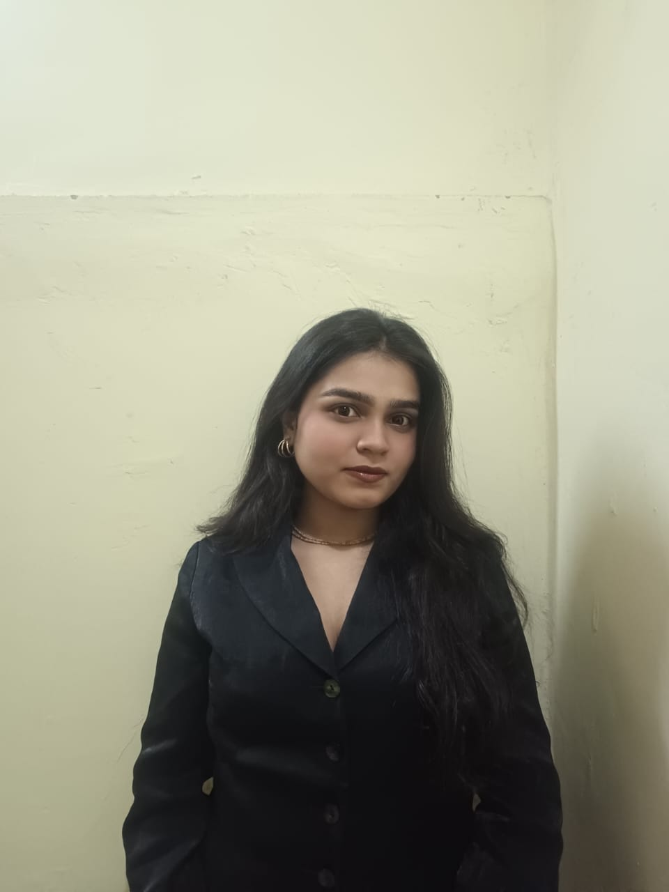

Software Developer
Frelancer | Open Source Developer
saeekailas@gmail.com
I am a software developer currently working as a freelancer. I completed my B.Tech in Computer Science and Engineering from D. Y. Patil University, Pune, in June 2025, graduating with a CGPA of 9.20.
My interests and expertise revolve around Software Engineering, Machine Learning, and AI. I have strong programming skills in Python, C and C++. I have solved more than 500 problems on LeetCode, hold a rating of 1869 (Expert) on Codeforces, and a rank of 4 Kyu on AtCoder.
I also actively contribute to open-source projects, with my recent contributions to Microsoft365DSC.
I am open to collaboration opportunities! Please feel free to contact me via email. My CV is at Curriculum Vitae (CV).